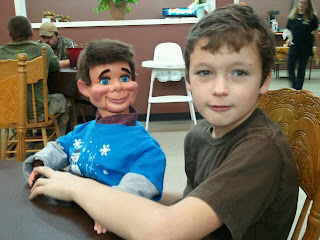

You made my day!
1/21/2011
{kind=link}

Yesterday I received this photo along with one simple note: "I like my dummy, thank you very much. Cason Pate"
That was one of the most encouraging emails I've received in a while. Why? Because it came from a youth!
Years ago I would hear daily from youngsters excited to try ventriloquism. But over the past 20 years or so, most of my correspondence is with adults. Less frequently a youth. Today's kids enjoy watching a ventriloquist perform, but as for taking up the art themselves, most are too busy with other things, mostly electronic and sports.
When I wrote about "Favorite Ventriloquists" several days ago, a number of readers made comments and included names of their favorite ventriloquists. I think I counted over 3o different ventriloquists that were named. That's quite amazing. And there are a good number more who could be added to the list. And of those 30+ professional ventriloquists named, nearly all took up the art as teens and pre-teens. By the time they were in their 20s, their professional careers were well under way. It's so important for the longevity of the art that there is always a new wave of talent on the horizon.
But name one professional ventriloquist today under the age of thirty. Twenty or so years ago you could have named a dozen or more, and they are, by the way, now included on the "favorites" list. Ventriloquists can be successful beginning at any age. But those who begin as a youth definitely have an advantage.
So, Cason, you keep your new little pal, "Jack", busy today and each tomorrow, and he'll keep you happily busy for years to come! Thank you for writing. You made my day!